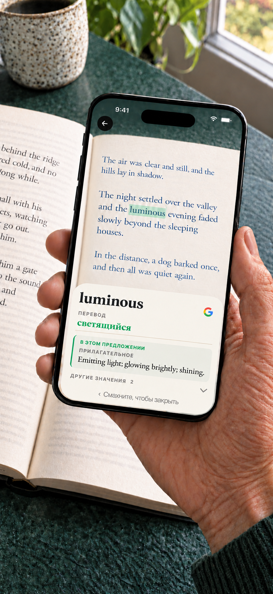

Booktionary · iPhone · Android
Словарь с камерой для бумажных книг
Незнакомое слово не должно отвлекать от хорошей книги. Наведите на него камеру телефона, узнайте значение и продолжайте читать. Вводить слово не нужно.
iPhone · iOS 17+ / Android 8.0+ · $1.99 USD

Android
Английский словарь встроен. Загрузите другие словари и переводы слов перед чтением; установленные ресурсы работают без интернета. Учётная запись не нужна.
Одна покупка включает все доступные словари и пакеты перевода слов. Без подписки и встроенных покупок.
Выбор значения по контексту для английских книг
На совместимых телефонах с Android 12 или новее и минимум 8 ГБ RAM необязательная модель на устройстве может выбирать словарное значение для английских книг. Модель загружается отдельно через Google Play. Перед включением приложение проверяет скорость работы и доступные ресурсы; минимальные требования не гарантируют доступность. Выбор появляется только если готов при открытии определения. Обычный поиск работает без модели.
Камера и конфиденциальность
Изображения и распознанный текст обрабатываются на устройстве. Google ML Kit собирает технические диагностические данные и данные использования. Загрузки передают хостам обычные сведения о соединении. Если выбрать поиск Google, запрос отправляется браузеру и Google и требует интернета. См. политику конфиденциальности Android.
Требуются Android 8.0 или новее и камера.
Полезно знать
Выберите язык книги, наведите камеру на слово и немного подождите. Смахните определение, чтобы читать дальше. Охват словарей и переводов слов различается. Для просмотра и загрузки языковых ресурсов нужен интернет. Нажмите и удерживайте слово в определении, чтобы найти его в словаре, скопировать или поискать в Google. Затем вернитесь к исходной статье. Отсканированное слово тоже можно сразу найти в Google.
iPhone · Загрузите один раз. Читайте без интернета.
Английский словарь встроен. Загрузите другие словари, переводы слов и необходимые модели перевода. Установленные ресурсы работают офлайн. Учётная запись не нужна. Поиск Google необязателен, открывает браузер и требует интернета. Текст запроса отправляется в Google только при выборе этого действия. Кадры камеры остаются на iPhone.
Одна покупка включает все доступные словари и пакеты перевода слов. Без подписки и встроенных покупок.
iPhone · Значение с учётом предложения
У слова может быть несколько значений. На поддерживаемых устройствах Booktionary использует окружающий текст, чтобы помочь показать подходящее словарное значение первым. Остальные значения тоже можно посмотреть.
iPhone · Больше помощи с книгами на английском
Добавьте русские переводы слов рядом с английскими определениями. Можно также включить перевод определений и переключаться между английским и русским. Заранее загрузите нужные языковые модели.

Словари для книг на 24 языках
Английский, вьетнамский, датский, индонезийский, испанский, итальянский, китайский (упрощённое и традиционное письмо), корейский, курдский (курманджи, латиница), малайский (руми), немецкий, нидерландский, норвежский букмол, польский, португальский, румынский, русский, тайский, турецкий, украинский, французский, чешский, шведский и японский.
iPhone · Английские слова можно переводить на остальные языки списка, а также на греческий. Чтение греческих книг не поддерживается. Курдский охватывает курманджи на латинице, а не сорани; малайский — руми, а не джави. Переводите на английский слова со всех 23 поддерживаемых языков книг, кроме английского. Перевод определений на английский можно включить при наличии совместимых моделей перевода.
- EnglishВстроен
- FrançaisЗагрузить
- EspañolЗагрузить
- PortuguêsЗагрузить
- ItalianoЗагрузить
- DeutschЗагрузить
- DanskЗагрузить
- NederlandsЗагрузить
- Norsk (bokmål)Загрузить
- РусскийЗагрузить
- SvenskaЗагрузить
- PolskiЗагрузить
- ČeštinaЗагрузить
- 日本語Загрузить
- ไทยЗагрузить
- RomânăЗагрузить
- Tiếng ViệtЗагрузить
- TürkçeЗагрузить
- Bahasa IndonesiaЗагрузить
- 中文 · 简体 / 繁體Загрузить
- 한국어Загрузить
- УкраїнськаЗагрузить
- Kurdî (Kurmancî)Загрузить
- Bahasa MelayuЗагрузить
Поддержка
Быстрый поиск слов при чтении